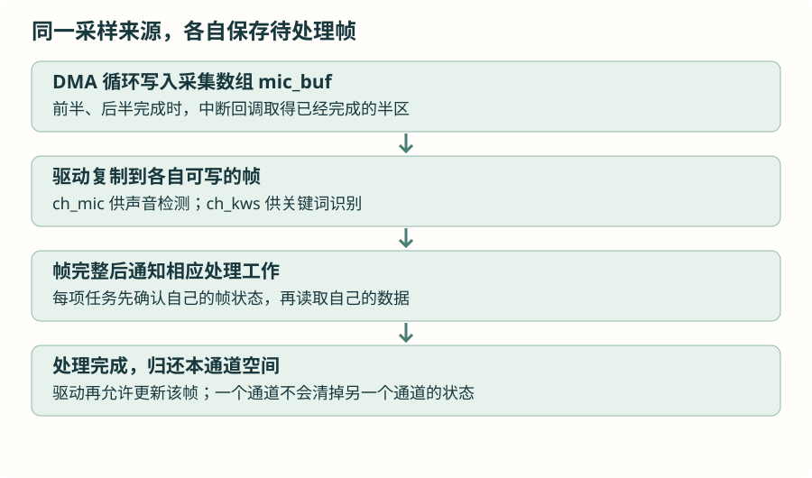

一帧声音，两项用途：先通知，再交付
麦克风的一帧采样同时用于声音检测和关键词识别。沿着“采集完成、通知任务、读取私有帧、归还空间”理解当前实现，再比较通知指定任务的另一种方式。
1 · 为什么一个使用者的办法不够了？
ADC 和 DMA 篇先只交给一个使用者：一帧采集完整以后，主循环读取，再允许下一帧更新。现在有两项工作：Mic_Task 判断声音强弱，TaskKWS 累积声音并识别关键词。
若只有一份“帧已经可以读”的标志，声音检测读完就清除，关键词任务可能还没看见；若采集者立即改写同一数组，另一个任务可能读到前半是旧数据、后半是新数据。两个问题要分开解决：怎样发通知，以及怎样保存可稳定读取的数据。
2 · 事件组先解决“发生了哪些事”
事件组是内核管理的一组位标志。例如最低位为 1 表示“有声音帧需要处理”，第二位为 1 可以表示另一件事。位只记录条件，不装声音样本，也不会自动累计每次事件。
和当前项目相同的对象与最低位定义
#include "event_groups.h"
EventGroupHandle_t xMicEvents;
#define EVT_MIC_FRAME_READY (1U << 0)
/* main() 内，早于驱动回调和两个任务使用： */
xMicEvents = xEventGroupCreate();
if (xMicEvents == NULL) Error_Handler();1U << 0 表示把无符号整数 1 放在第 0 位。以后若还有别的条件，可用其他位区分，但本节先只使用声音帧这一位，不先设计一套事件编号框架。
任务循环内 · 先解释等待，再接真实的帧读取
EventBits_t bits = xEventGroupWaitBits(
xMicEvents, EVT_MIC_FRAME_READY,
pdTRUE, pdFALSE, portMAX_DELAY);
if (bits & EVT_MIC_FRAME_READY) {
/* 再查看属于本任务的帧是否可读。 */
}| 参数 | 这里的含义 |
|---|---|
| xMicEvents | 等待哪一个事件组。 |
| EVT_MIC_FRAME_READY | 关心哪几个事件位。 |
| pdTRUE | 等待条件满足时，由内核清除本次关心的事件位。 |
| pdFALSE | 关心的位中任一个满足即可；这里只有一个位。 |
| portMAX_DELAY | 本项目配置下，允许一直阻塞等待。 |
返回值是事件位快照，使用按位与检查是否包含想要的那一位。若采用有限超时，等待返回也可能是没有这个事件，不能仅因函数返回就当成得到了一帧。
3 · 两个任务都等这一位，会不会互相抢走？
内核设置事件位时，会检查当时已经阻塞等待、且条件满足的任务，使符合条件的任务解除等待，再按清除请求处理事件位。因此两个已经在等同一位的任务，可以因同一次设置而都变成就绪，不等于二值信号量的一份通知只被一个任务取得。
但如果某任务正在计算，直到事件位已被清除后才来等，它不会凭这个事件组自动补收到每一次历史通知。事件组不是对每个接收者都保存一串消息的信箱。当前驱动还需要用各自的帧状态保存“本任务的数据是否仍待处理”。
DMA 中断侧不能调用可能阻塞的普通接口。当前声音驱动在内部拼帧确认可读之后，采用下面的通知方式：
通知片段 · 放在已经完成帧状态更新的 DMA 回调内
BaseType_t higher_task_woken = pdFALSE;
BaseType_t result = xEventGroupSetBitsFromISR(
xMicEvents, EVT_MIC_FRAME_READY, &higher_task_woken);
if (result != pdPASS) {
/* 实验中在此增加通知提交失败计数。 */
}
portYIELD_FROM_ISR(higher_task_woken);这项中断接口通过内核服务任务延后执行设置事件位，提交命令的队列也有容量限制。返回成功表示提交成功，不是承诺两个声音任务已经开始处理；失败时要能观察到。这里的唤醒判断也涉及处理这条命令的服务任务。使用门槛仍是上一节核对过的中断优先级范围。
4 · 数据分成两份私有帧，按步骤读驱动

阅读 spu0410.c 时按四步走，不先展开整个结构体：
- 采集。
HAL_ADC_ConvHalfCpltCallback()和完成回调说明哪半块数据可以复制。 - 准备帧。
ch_on_half_locked()记录前后半的完成情况，两个半区都已复制时才把该通道的frame_ready设为 1。 - 读取。帧可读期间，该通道不再直接改写这份帧；声音检测读取
ch_mic，关键词读取ch_kws。 - 归还。
ch_release_locked()清除本通道的占用状态，处理已有的待更新标志；如又有可处理的完整帧，再次通知。
名称中的 locked 提醒这部分状态更新需要在已经建立的保护范围里完成。任务侧用短临界区，中断侧用对应的中断临界区接口。不要把声音算法本身搬进临界区。
待更新标志的容量有限，保存的是半区待处理状态，不是所有历史声音帧的副本。采集数组仍然循环覆盖，因此不能据此宣称处理任务再慢也不会丢样本。延迟、处理耗时和是否发生覆盖，仍要用运行计数和实际声音连续性核对。
5 · 两个入口分别做什么？
声音检测任务拿到提示后，调用已经介绍过的声音检测驱动。驱动只消费声音检测通道，结束后归还这一通道的帧。当前任务接着把结果送入安全检测逻辑：
来自 Mic_Task 的核心工作 · 事件等待在前面执行
if (bits & EVT_MIC_FRAME_READY) {
int shouting = mic_is_shouting();
safety_feed_shout(xTaskGetTickCount() * portTICK_PERIOD_MS,
shouting);
}mic_is_shouting() 计算并返回是否达到声音检测条件；safety_feed_shout() 接收发生时间和结果，让应用判断后续告警。这里读懂结果交接即可，告警策略不在本节展开。
关键词任务先激活自己的消费通道，再等待事件；取帧的核心步骤是：
TaskKWS 循环内 · mic_frame 属于该任务，大小需计入任务栈
int16_t mic_frame[MIC_BUFFER_SIZE];
if (mic_get_frame(mic_frame) != 0) {
continue;
}
/* 之后才能把这一帧放入关键词任务自己的累积数组。 */mic_get_frame() 读取关键词通道，去掉直流偏置并复制到任务数组，然后归还该通道。它返回失败就不处理这个数组。模型需要一段更长声音，所以任务继续累积帧；本章只追踪数据和执行顺序，特征与模型在 AI 支线学习。
6 · 只想通知一个指定任务，还有更直接的方式
若明确只有一个接收任务，可使用任务通知。每个任务有内核维护的通知状态和值，不必另外创建信号量对象。先在独立计数实验中保存接收者句柄：
独立通知实验 · 放在 main() 外，不能直接替换项目事件组实现
static TaskHandle_t receiver_handle;
static volatile uint32_t received_notifications;
static void ReceiverTask(void *argument)
{
(void)argument;
for (;;) {
uint32_t count = ulTaskNotifyTake(pdTRUE, portMAX_DELAY);
received_notifications += count;
}
}创建接收者后，再让发送者使用这个有效句柄
BaseType_t result = xTaskCreate(ReceiverTask, "Receiver", 256,
NULL, 1, &receiver_handle);
if (result != pdPASS) Error_Handler();
/* 在另一个任务中，每完成一件工作后： */
xTaskNotifyGive(receiver_handle);xTaskNotifyGive() 增加目标任务的通知计数，ulTaskNotifyTake(pdTRUE, ...) 等到计数非零后取得原计数并清零。若第一个参数为 pdFALSE，取得时只减一。它们仍然只传递通知信息，不会保存声音数组。
二值信号量、队列、互斥量、事件组、任务通知已经分别在具体问题里出现。选择时先问：要交付数据，还是等待条件？有几个使用者？数据由谁保存？无需为了采用另一种机制，立即重写现有声音驱动。
资料与源码
本章按仓库当前 FreeRTOS V11.2.0 与 STM32U5 端口核对接口。图解描述执行关系，任务耗时和硬件行为需在实际工程观察。